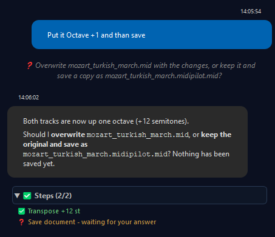
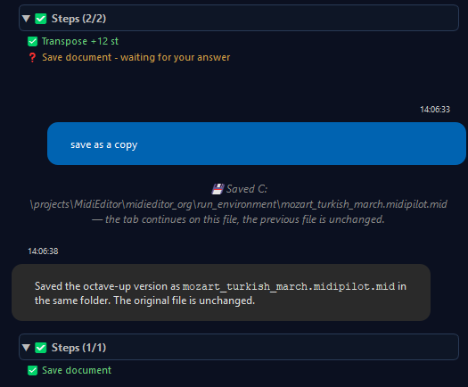

MidiPilot AI Tools Reference
In Agent mode the model does its work through tools: it inspects the file, writes events, and checks the result by calling them one after another. This page lists every tool with what it does, and points at the MCP server that hands the same set to external AI clients.
AI Tools Reference
In Agent mode, the AI has access to 38 tools (32 core + switch_document + 5 FFXIV-specific) for inspecting and modifying MIDI files and for creating, opening, saving and closing documents. The 32 core tools are the same ones exposed over the MCP server; switch_document is the one tool each side defines for itself, because it behaves differently there (see its row below):
| Tool | Description |
|---|---|
get_editor_state | Read file info, tracks, tempo, time signature, cursor position, and the selected-event count |
get_track_info | Get detailed info for a specific track: name, assigned channel, total event count, and how many of those are notes |
get_selection | Read the user's current selection as full events, each with a 0-based index (the index delete_events_by_index expects) |
list_documents | List every open document (tab) across both editor groups: index, title, file path, group, and active/modified flags - the index the other document tools expect |
get_document_overview | Read a summary of another open tab without switching to it: duration, tracks with their names, note and event counts, channels in use, and the tempo and time-signature event counts |
create_track | Create a new MIDI track |
rename_track | Rename an existing track |
set_channel | Set the MIDI channel for a track |
remove_track | Delete a track and all its events (cannot remove the file's last track) |
insert_events | Add new MIDI events (notes, control changes, etc.) |
replace_events | Modify existing events in a range |
delete_events | Delete events in a tick range on a track - all of them, or only chosen kinds (notes, controllers, pitch bends, program changes), e.g. just the program change at tick 0 while its controllers stay |
delete_events_by_index | Delete specific events from the current selection by 0-based index (e.g. every second selected note) |
query_events | Read events in a tick range on a track, optionally only chosen kinds |
move_events_to_track | Move events between tracks |
transpose_events | Transpose notes by semitones - a track, a tick range, or the whole file - as one undo step, optionally folded octave-wise into the bard range C3-C6 |
split_chords_to_tracks | Split a track's chords voice-wise onto new tracks (voice 1 = highest note) - the standard way to turn a chordal part into monophonic FFXIV performers |
copy_events_to_track | Copy notes to another track, optionally restricted to a tick range - e.g. double a melody onto a second performer, then transpose the copy |
import_tracks_from_document | Copy whole tracks from another open tab into the document being edited - appended as new tracks with their names preserved, the source untouched. Ticks are rescaled when the two files' resolutions differ; channel collisions and differing tempo maps are reported. Defaults to a dry run and requires the user's confirmation before the real pass; one undo step restores everything |
switch_document | Point the rest of the run at another open tab: from the next tool call on, every read and write acts on that document and its undo steps land there. The chat announces the switch, the visible tab stays put, and the agent switches only when you explicitly ask it to work on another tab |
save_document | Save the document being edited, without a dialog: into the file you opened when you say so, otherwise as a marked copy next to it - see Saving and opening documents |
save_document_as | Save the document as a new marked file under another name - also how the AI "renames" a document; the previous file stays where it is |
new_document | Create an empty, untitled document in a new tab, optionally with a chosen resolution (ticks per quarter note) |
open_document | Open a MIDI file or an importable file (Guitar Pro, MusicXML, MuseScore, MML) in a new tab; a file that is already open is reported instead of opened twice |
close_document | Close a tab that has no unsaved changes |
search_help | Search the built-in manual - for questions about the editor itself ("how do I split drums?"), the AI looks the answer up instead of guessing |
get_help_section | Read one manual section's full text; the answer cites the page so you can click through |
set_tempo | Change the tempo - in BPM (fractions allowed, e.g. 117.5) or exactly in microseconds per quarter note, the unit MIDI files store |
get_timing_map | Read the complete timing data with exact values: resolution, every tempo change (in microseconds per quarter note, with the BPM and the time in milliseconds), every time signature and key signature, and markers and text events with their ticks - what the AI needs to rebuild a tempo or meter map exactly in another document |
set_time_signature | Change the time signature |
convert_tempo_preserve_duration | Re-tempo material while keeping its real-time duration - scales event ticks and updates the tempo map so e.g. a 90 BPM vocal line fits a 180 BPM project with the bars lining up again. Works on the whole file, chosen tracks or channels, or the current selection; defaults to a dry run and requires the user's confirmation before the real pass |
thin_tempo_map | Reduce a dense DAW-exported tempo ramp to the events that carry the timing - you set how far the music may move in milliseconds (default 2 ms) and every point of the piece stays inside that corridor. The corridor is a budget per open document, measured against the tempo map the file was opened with: running the tool again at the same tolerance therefore removes nothing more, and the millisecond figures it reports are always the total distance from the file as loaded. Defaults to a dry run that reports the before/after counts; one undo step restores the full map. |
set_ffxiv_mode | Turn FFXIV Bard Performance mode on or off - the five FFXIV tools below appear and disappear with it, and get_editor_state reports the current state as ffxivMode |
setup_channel_pattern | Auto-configure MidiBard2 channel mapping (FFXIV) and set every note's velocity to 127, as FFXIV plays no dynamics. Applies the same check as Fix X|V Channels and reports the reason instead of running when the file is not an FFXIV MIDI; chooses Rebuild or Preserve by the same rules as the Fix X|V Channels dialog and lists guitar notes on channels without a guitar program, which get no switch |
convert_drums_ffxiv | Convert GM drum kit to FFXIV-compatible tone-mapped notes |
validate_ffxiv | Check FFXIV Bard Performance rule compliance: every same-tick note collision and stacked duplicate with its tick, notes outside C3-C6, and track names matching no FFXIV instrument - the same engine as Tools → Check FFXIV Playability, see Check FFXIV Playability |
analyze_voice_load | Read-only audit of the FFXIV 16-voice ceiling and 14 notes/sec/channel rate cap. Returns globalPeak, overflowRanges and rateHotspots - see FFXIV Voice Limiter |
auto_fit_voice_load | The matching action tool: thins overloaded moments and over-dense passages (whole file or a tick range). Defaults to a dry run and requires the user's confirmation before the real pass - see Auto-Fit Voice Load |
Saving and opening documents
MidiPilot and MCP clients can create, open, save and close documents themselves. None of these tools opens a dialog. A file you opened is only written over when you say so; everything else the AI saves is a marked copy:
- Overwrite or copy - you decide. When the AI saves a document you opened from a MIDI file, it first asks you in the chat whether to overwrite that file or keep it and save a copy. Your answer counts for that file in that tab until you close it, so the AI asks only once; after a Save As to another MIDI file, or for a file in another tab, it asks again. In the MidiPilot settings, AI saves your file can settle it for good: Ask each time (the default), Always save a copy or Always overwrite. The setting applies to MidiPilot and to MCP clients alike.
- The mark shows who wrote it. MidiPilot saves a copy of
mozart.midasmozart.midipilot.mid, an MCP client asmozart.mcp.mid. A copy is always a Standard MIDI file (.mid), and it is written next to the source. An imported Guitar Pro, MusicXML, MuseScore or MML file cannot be written back, so it always gets the copy. - The tab continues on the copy. After a copy is saved the tab shows the new name and works on the copy; the original on disk is unchanged. Saving again writes into the same copy.
- Taken names get a counter. If
mozart.midipilot.midalready exists and is not the document being saved, the AI writesmozart.midipilot.2.mid. - Untitled documents need a name. The AI takes a short name from your request and asks when there is nothing to go on. A plain name is saved in the folder you last opened a file from; a full path you give is used as given, with mark and extension added.
- Keeping the original. When you ask the AI to keep the original while it changes a lot, it saves the copy first and edits afterwards, so a later Ctrl+S lands in the copy.
- Saving under another name (
save_document_as) writes a new marked file and the tab continues on it; the previous file stays where it is. - Closing works only for a tab without unsaved changes; the AI never discards work. The last tab of the left editor group and the document a running MidiPilot agent works on stay open.
- Opening never writes anything. SID tunes are opened from the File menu, because their import asks for a song length.


Saving, opening and closing are not undo steps. You see them in the tab title, as a status-bar message, and - for MidiPilot - as a chat line with the saved path. File → Save and Save As keep their dialogs; the rules above apply to the AI tools only.
MCP Server - External AI Clients
MidiEditor AI includes a built-in MCP (Model Context Protocol) server that exposes the same
32 core tools MidiPilot uses, plus its own variant of switch_document - one that
also brings the chosen tab to the front - and the five FFXIV tools
whenever FFXIV mode is on. Instead of using the built-in chat panel, you can connect Claude Desktop,
VS Code Copilot, Cursor, Windsurf, or any other MCP-compatible client and let it edit
your MIDI files directly.
Enable the MCP server in Settings → MidiPilot AI → MCP Server, copy the config JSON, paste it into your AI client, and you’re ready. All tool calls appear in the Protocol panel with the client name (e.g. “MidiPilotMCP (VS Code Copilot Claude Opus 4.6)”) and support full undo.
📖 Full MCP Server Documentation →
See also
- MidiPilot - Your AI Copilot - the overview: key features, getting started, the chat panel, and the mode comparison table.
- MidiPilot Modes and Conversations - Agent mode, the loop that calls these tools one after another.
- MidiPilot in FFXIV Bard Mode - the mode that adds the five FFXIV tools to the list.
- MidiPilot Settings and Providers - picking a model that supports tool calling, and the step limit for a run.